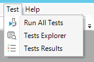
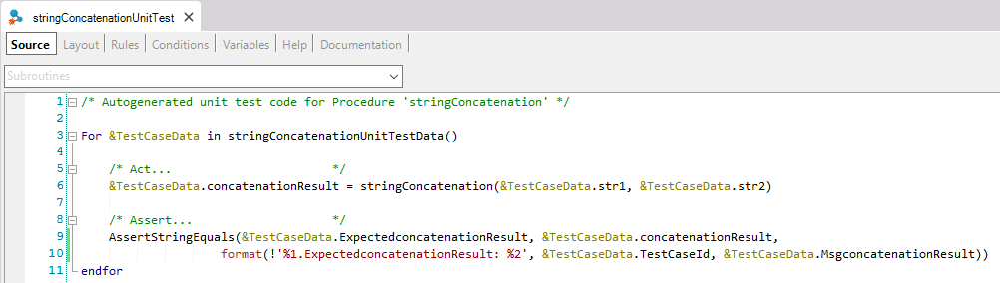
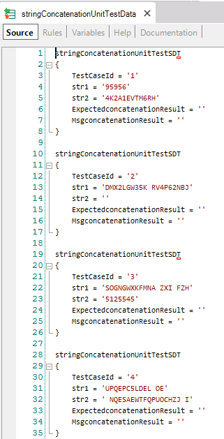
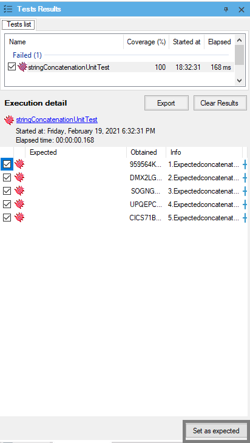
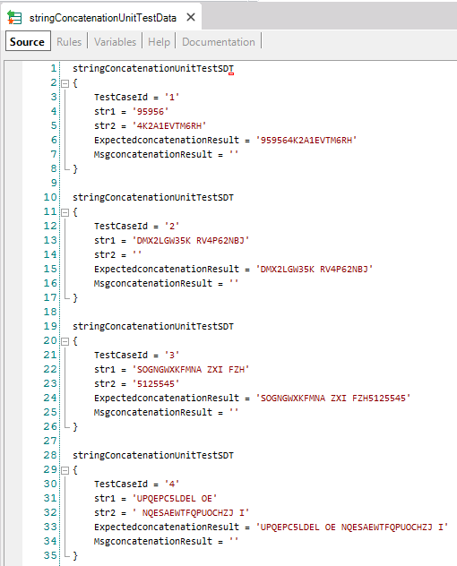

Creating Unit Tests
Before starting, make sure you are using a GeneXus version that already supports the Unit Testing Framework.
The easiest way to check this is to take a look at your Genexus IDE menu. It should have a “Test” menu on the menu bar:

If you don't have this option, see how to install it.
Unit tests are a new type of Object in your GeneXus KB with the particularity of being a special GeneXus Procedure. This means that you can write GeneXus code inside it for testing your objects with different data and validations (assertions). The easiest way to create a unit test is by right-clicking the Object you want to test in the KB Explorer and selecting the “Create Unit Test” option. This option will automatically create a new Unit Test Object to test the object you've selected. Supported objects are procedures, data providers and business components.

For this purpose, a new unit test will be automatically generated, where you will probably need to add different data input and output to test different scenarios.
By default, the test generates three objects:
- an SDT for handle input and output structure
- a Data Provider containing generated data sets.
- a Unit Test that calls a target object using all data sets defined in Data Provider and makes assertions on output values.
You can find a video explaining these three objects.
Simple unit test generation example
Imagine a simple Procedure that concatenates two input strings received by parameter, called "stringConcatenation". So, this will be a simple test auto-generated:

Note that the code template is intended to be fully edited to add different inputs and validate output using assertions.
Assertions are used to validate the Procedure's result/output during test execution, usually by comparing an output variable with an expected value. Any number of assertions can be added to a Test, each validating some different results. If any of them fail, the Test result will be FAILED.
You can also add database assertions navigating results using FOREACH as usual, comparing database results against your procedure's output.
This auto-generated code iterates over a collection of data (StringConcatenationUnitTestData):

By default, 5 data sets are generated automatically using a mix of fixed and random values
Each test case has the TestCaseId parameter, which will be used just by GXtest to identify the test case. Also, it has the input values of the procedure to test, the expected result, and the message in case of the test case assertion fails.
It is possible to execute the unit test with empty expected values and set the expected values, in the Data Provider, with the obtained values. Suppose, in the previous example you can execute the unit test with the generated test cases without complete the expected values and select the Set as expected button:

Then, the expected values in the Data provider with the test cases will be set:

Test data generation configuration
The data provider enables you to run the test with several data combinations. Developers can configure data generated (sets and data used), by selecting the algorithm to combine data. You can see how to configure test data generation.
On top of this, users can now define Domain Test Values for their domain variables when creating unit tests from objects. This can be achieved by defining the Test Values property within the user defined domain, by providing a comma separated set of values. We strongly recommend that when using this feature, the user selects a combination algorithm that makes the most of the test data (such as carthesian or pairwise).